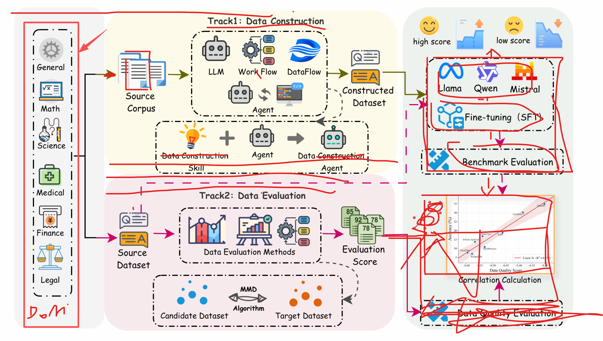

DataPrep-Bench is the first unified, downstream-grounded benchmark that jointly evaluates how well LLMs, agents, and data workflows can prepare training data end to end. It covers two complementary tracks — Data Construction (transforming raw sources into SFT data) and Data Quality Evaluation (predicting downstream utility of candidate datasets) — and ships two strong baselines: Data-Construction-Skill (skill-driven agentic construction) and the Distributional Alignment Score (DAS) (training-free, MMD-based quality estimator).
The quality of training data fundamentally determines the capabilities of large language models (LLMs). As the community increasingly relies on LLMs, agents, and data-centric workflows to produce and curate training corpora, a foundational question emerges: how well can these systems actually prepare training data end to end? Despite the rapid proliferation of LLM-driven data preparation techniques, no unified benchmark exists to systematically measure their effectiveness.
We view LLM-driven data preparation as comprising two complementary capabilities: data construction, which transforms raw sources into high-quality training data, and data quality evaluation, which predicts the training value of candidate datasets before downstream training. We introduce DataPrep-Bench, the first comprehensive benchmark that jointly evaluates both capabilities as first-class targets under a unified, downstream-grounded protocol.
DataPrep-Bench is organized around two tracks. (1) Data Construction takes low-quality or otherwise non-trainable sources (e.g., domain books) as input and asks agents or workflows to transform them into supervised training data; the produced data is evaluated end to end by the downstream performance of models fine-tuned on it. We release Data-Construction-Skill as a strong baseline. (2) Data Quality Evaluation takes mainstream candidate training datasets and produces scalar scores; its goal is to measure whether a scoring function is linearly predictive of downstream utility. We release the Distributional Alignment Score (DAS) as a strong baseline. Across multiple domains and architectures, DAS achieves strong overall correlation with downstream performance and outperforms existing quality-, diversity-, and heuristic-based evaluators in most settings.
DataPrep-Bench formalizes data preparation under a unified, downstream-grounded framework. Both tracks share the same evaluation principle: a data preparation decision is useful only if it leads to better downstream model performance. Concretely, the common reference signal is \( \mathrm{Perf}\bigl(f(\mathcal{X}), \mathcal{T}_k\bigr) \) — the benchmark score of a base model fine-tuned on dataset \(\mathcal{X}\) for domain \(D_k\).

Can LLMs, agents, and workflows transform raw domain sources (books, manuals, long-form materials) into useful supervised fine-tuning data?
Can a scoring function \(Q\) predict downstream utility of candidate training datasets before fine-tuning?
A skill-guided agentic framework that turns long-form domain books into reusable SFT supervision. The novelty is treating skills — explicit specifications of sample types, output schemas, filtering rules and validation — as a reusable control layer that sits between high-level construction goals and low-level agent execution.
A training-free, distribution-level data quality metric grounded in domain-adaptation theory. DAS instantiates \(Q\) as the (negative) MMD between a candidate dataset and a domain proxy.
We compare four families of construction methods — DataFlow-based, Direct LLM, Agent-based, and our Skill-based baseline — by fine-tuning Qwen2.5-7B and Llama-3.1-8B on each method's synthesized dataset and measuring downstream performance across six domains.
| Generator | Math | General | Finance | |||||||
|---|---|---|---|---|---|---|---|---|---|---|
| GSM8K | AMC23 | AIME24 | M-Math | OB | M500 | GK24 | Avg | MMLU-R | Avg | |
| No synthetic training | 69.9 | 17.5 | 0.0 | 10.7 | 10.7 | 39.8 | 16.5 | 23.6 | 77.7 | 57.8 |
| DataFlow-based Generators | ||||||||||
| DataFlow | 56.5 | 7.5 | 0.0 | 7.7 | 7.9 | 27.4 | 17.6 | 17.8 | 77.9 | 54.9 |
| DataFlow-Skill | 56.7 | 10.0 | 0.0 | 8.8 | 6.2 | 22.8 | 28.6 | 19.0 | 76.5 | — |
| LLM-based Generators | ||||||||||
| Claude Opus 4.6 | 68.8 | 12.5 | 0.0 | 8.8 | 9.8 | 35.5 | 14.3 | 21.4 | 78.2 | 44.4 |
| Gemini 3.0 Pro | 72.1 | 20.0 | 0.0 | 10.7 | 11.4 | 37.9 | 15.4 | 23.9 | 77.8 | 52.2 |
| GPT-5.2 | 66.7 | 17.5 | 0.0 | 7.7 | 11.1 | 32.7 | 14.3 | 21.4 | 77.9 | 48.1 |
| Agent-based Generators | ||||||||||
| Qwen3.5-Plus | 72.7 | 22.5 | 3.3 | 11.0 | 11.6 | 38.7 | 16.5 | 25.2 | 77.6 | 51.1 |
| GLM-4.7 | 71.4 | 22.5 | 3.3 | 9.6 | 11.6 | 37.9 | 20.9 | 25.3 | 77.3 | 53.3 |
| Claude Opus 4.6 | 69.4 | 10.0 | 0.0 | 11.0 | 8.9 | 33.8 | 19.8 | 21.8 | 75.9 | 41.9 |
| Gemini 3.0 Pro | 70.1 | 15.0 | 0.0 | 8.8 | 10.8 | 35.7 | 20.9 | 23.0 | 77.7 | 53.7 |
| GPT-5.2 | 69.6 | 25.0 | 3.3 | 8.8 | 9.9 | 35.6 | 26.4 | 25.5 | 77.7 | 43.2 |
| GPT-5.3-codex | 70.8 | 15.0 | 0.0 | 11.0 | 11.7 | 38.5 | 13.2 | 22.9 | 77.6 | 59.3 |
| Skill (Claude Opus 4.6) | 72.6 | 17.5 | 3.3 | 14.0 | 11.1 | 36.8 | 13.2 | 24.1 | 78.2 | 55.5 |
synthetic_data_mgf_qwen in the paper. Bold marks the best in each column.
| Generator | Law | Medicine | Science | |||||
|---|---|---|---|---|---|---|---|---|
| LegalBench | LexGLUE | Avg | MedCaseR. | MedMCQA | MedR-Bench | Avg | Avg | |
| No synthetic training | 86.9 | 62.0 | 74.5 | 13.6 | 27.4 | 67.8 | 36.3 | 27.9 |
| DataFlow-based Generators | ||||||||
| DataFlow | 89.7 | 64.8 | 77.2 | 9.9 | 29.4 | 63.6 | 34.3 | 20.1 |
| DataFlow-Skill | 92.0 | 57.4 | 74.7 | 11.9 | 24.1 | 65.6 | 33.9 | 23.4 |
| LLM-based Generators | ||||||||
| Claude Opus 4.6 | 88.0 | 63.2 | 75.6 | 13.9 | 8.1 | 66.8 | 29.6 | 23.1 |
| Gemini 3.0 Pro | 85.9 | 63.5 | 74.7 | 12.2 | 6.0 | 69.1 | 29.1 | 23.8 |
| GPT-5.2 | 89.2 | 60.9 | 75.0 | 10.6 | 23.3 | 66.0 | 33.3 | 22.4 |
| Agent-based Generators | ||||||||
| Qwen3.5-Plus | 90.2 | 61.0 | 75.6 | 16.5 | 16.5 | 68.3 | 33.8 | 26.8 |
| GLM-4.7 | 84.8 | 61.4 | 73.1 | 15.2 | 10.6 | 66.8 | 30.9 | 23.5 |
| Claude Opus 4.6 | 65.2 | 48.8 | 57.0 | 16.6 | 50.7 | 54.3 | 40.5 | 22.6 |
| Gemini 3.0 Pro | 57.5 | 55.5 | 56.5 | 15.8 | 52.3 | 63.4 | 43.8 | 26.2 |
| GPT-5.2 | 61.7 | 51.9 | 56.8 | 14.7 | 45.0 | 59.0 | 39.6 | 24.8 |
| GPT-5.3-codex | 87.8 | 63.4 | 75.6 | 13.6 | 20.3 | 70.0 | 34.6 | 19.8 |
| Skill (Claude Opus 4.6) | 85.5 | 61.7 | 73.6 | 9.9 | 15.3 | 65.4 | 30.2 | 21.4 |
synthetic_data_slm_qwen in the paper. Science Avg aggregates 7 benchmarks (MMLU-STEM, MMLU-Pro, GPQA, SuperGPQA, ChemBench, PIQA, SciBench).
| Generator | Math | General | Finance | |||||||
|---|---|---|---|---|---|---|---|---|---|---|
| GSM8K | AMC23 | AIME24 | M-Math | OB | M500 | GK24 | Avg | MMLU-R | Avg | |
| No synthetic training | 33.9 | 10.0 | 0.0 | 6.6 | 3.7 | 13.6 | 14.3 | 11.7 | 67.1 | 15.1 |
| DataFlow-based Generators | ||||||||||
| DataFlow | 8.4 | 10.0 | 0.0 | 4.8 | 2.5 | 6.1 | 8.8 | 5.8 | 51.1 | 31.4 |
| DataFlow-Skill | 8.7 | 2.5 | 0.0 | 4.4 | 3.3 | 7.2 | 16.5 | 6.1 | 48.4 | 36.5 |
| LLM-based Generators | ||||||||||
| Claude Opus 4.6 | 28.7 | 5.0 | 0.0 | 6.2 | 2.8 | 11.2 | 11.0 | 9.3 | 52.9 | 28.4 |
| Gemini 3.0 Pro | 30.7 | 7.5 | 0.0 | 8.1 | 3.7 | 12.6 | 14.3 | 11.0 | 50.8 | 31.2 |
| GPT-5.2 | 26.8 | 2.5 | 0.0 | 7.7 | 4.1 | 10.2 | 13.2 | 9.2 | 47.4 | 27.4 |
| Agent-based Generators | ||||||||||
| Qwen3.5-Plus | 33.7 | 5.0 | 0.0 | 6.6 | 4.4 | 11.3 | 12.1 | 10.4 | 50.4 | 27.4 |
| GLM-4.7 | 31.8 | 2.5 | 0.0 | 5.9 | 3.1 | 13.0 | 17.6 | 10.6 | 49.2 | 30.8 |
| Claude Opus 4.6 | 16.4 | 5.0 | 0.0 | 6.6 | 2.5 | 7.7 | 8.8 | 6.7 | 47.5 | 28.9 |
| Gemini 3.0 Pro | 29.6 | 7.5 | 0.0 | 6.2 | 3.6 | 11.5 | 17.6 | 10.9 | 47.9 | 29.3 |
| GPT-5.2 | 28.7 | 5.0 | 0.0 | 6.6 | 4.0 | 10.4 | 15.4 | 10.0 | 49.0 | 29.5 |
| GPT-5.3-codex | 29.9 | 2.5 | 0.0 | 5.9 | 2.8 | 12.2 | 14.3 | 9.7 | 51.3 | 30.3 |
| Skill (Claude Opus 4.6) | 16.5 | 7.5 | 0.0 | 4.4 | 3.0 | 9.5 | 11.0 | 7.4 | 51.3 | 34.2 |
synthetic_data_mgf_llama in the paper. Bold marks the best in each column.
| Generator | Law | Medicine | Science | |||||
|---|---|---|---|---|---|---|---|---|
| LegalBench | LexGLUE | Avg | MedCaseR. | MedMCQA | MedR-Bench | Avg | Avg | |
| No synthetic training | 87.9 | 51.1 | 69.5 | 9.9 | 17.1 | 34.3 | 20.4 | 13.2 |
| DataFlow-based Generators | ||||||||
| DataFlow | 84.0 | 61.3 | 72.7 | 12.3 | 21.3 | 56.1 | 29.9 | 4.7 |
| DataFlow-Skill | 85.2 | 61.0 | 73.1 | 12.4 | 33.8 | 61.8 | 36.0 | 3.1 |
| LLM-based Generators | ||||||||
| Claude Opus 4.6 | 85.9 | 56.1 | 71.0 | 16.3 | 27.2 | 64.8 | 36.1 | 9.3 |
| Gemini 3.0 Pro | 86.1 | 61.9 | 74.0 | 16.4 | 16.3 | 67.6 | 33.4 | 9.1 |
| GPT-5.2 | 91.6 | 61.3 | 76.4 | 13.5 | 26.9 | 56.8 | 32.4 | 8.5 |
| Agent-based Generators | ||||||||
| Qwen3.5-Plus | 84.2 | 62.3 | 73.2 | 16.7 | 13.7 | 69.9 | 33.4 | 9.3 |
| GLM-4.7 | 83.8 | 60.7 | 72.2 | 15.6 | 20.0 | 67.1 | 34.2 | 8.9 |
| Claude Opus 4.6 | 87.4 | 52.1 | 69.8 | 14.8 | 18.4 | 64.8 | 32.7 | 9.1 |
| Gemini 3.0 Pro | 86.3 | 60.6 | 73.5 | 16.5 | 15.9 | 70.2 | 34.2 | 5.5 |
| GPT-5.2 | 84.5 | 61.3 | 72.9 | 16.8 | 21.3 | 60.1 | 32.7 | 4.3 |
| GPT-5.3-codex | 89.6 | 63.1 | 76.3 | 18.3 | 23.7 | 65.0 | 35.7 | 8.3 |
| Skill (Claude Opus 4.6) | 86.6 | 53.7 | 70.2 | 13.7 | 27.9 | 64.6 | 35.4 | 7.5 |
synthetic_data_slm_llama in the paper.
For each metric \(Q\), we report Pearson correlation \(\rho\) between metric scores and downstream performance across three base models per domain. DAS (defined as \(-d_{\mathrm{MMD}}\) to a domain proxy) achieves consistent significant negative correlations with empirical performance in reasoning-intensive domains. Values are signed; ↓ on a metric column header means more-negative is better (DAS / MMD); ↑ means more-positive is better (quality/diversity scorers).
| Metric | Time (s) | General | Math | Science | |||||||||
|---|---|---|---|---|---|---|---|---|---|---|---|---|---|
| Qwen | Llama | Mistral | Avg | Qwen | Llama | Mistral | Avg | Qwen | Llama | Mistral | Avg | ||
| Distribution-based | |||||||||||||
| MMD (DAS = −MMD) | 306.02 | −0.64 | −0.65 | −0.74 | −0.68 | −0.72 | −0.93 | −0.94 | −0.86 | −0.53 | −0.82 | −0.80 | −0.72 |
| Quality-based | |||||||||||||
| Qurating-WritingStyle | 84.65 | 0.17 | 0.36 | 0.38 | 0.30 | −0.48 | −0.33 | −0.46 | −0.42 | −0.10 | −0.16 | 0.04 | −0.07 |
| Qurating-Expertise | −0.17 | −0.37 | −0.42 | −0.32 | 0.61 | 0.76 | 0.71 | 0.69 | 0.56 | 0.76 | 0.83 | 0.72 | |
| Qurating-FactsTrivia | 0.03 | 0.10 | 0.02 | 0.05 | −0.35 | −0.04 | −0.20 | −0.20 | −0.08 | 0.14 | 0.32 | 0.13 | |
| Qurating-Educational | −0.03 | 0.17 | 0.13 | 0.09 | −0.23 | 0.04 | −0.10 | −0.10 | 0.01 | 0.17 | 0.34 | 0.18 | |
| BERTVendi | 459.37 | 0.38 | 0.47 | 0.58 | 0.47 | −0.69 | −0.40 | −0.54 | −0.54 | −0.41 | −0.10 | −0.07 | −0.19 |
| SimCSEVendi | 0.30 | 0.46 | 0.55 | 0.44 | −0.80 | −0.50 | −0.63 | −0.65 | −0.66 | −0.43 | −0.34 | −0.48 | |
| Deita-Quality | 434.99 | 0.06 | 0.46 | 0.18 | 0.23 | −0.42 | −0.46 | −0.54 | −0.47 | 0.08 | −0.26 | −0.13 | −0.10 |
| RewardModel | 109.61 | 0.56 | 0.67 | 0.54 | 0.59 | −0.71 | −0.81 | −0.85 | −0.79 | −0.39 | −0.54 | −0.32 | −0.42 |
| Superfiltering | 40.05 | 0.13 | 0.25 | 0.30 | 0.23 | −0.11 | −0.21 | −0.29 | −0.21 | 0.02 | −0.10 | −0.13 | −0.07 |
| FineWebEdu | 11.67 | −0.43 | −0.43 | −0.37 | −0.41 | 0.42 | 0.74 | 0.65 | 0.60 | 0.09 | 0.45 | 0.59 | 0.37 |
| PairQual | 12.34 | −0.03 | −0.03 | −0.15 | −0.07 | −0.16 | 0.06 | −0.06 | −0.05 | 0.19 | 0.23 | 0.40 | 0.27 |
| Perplexity | 40.60 | 0.47 | 0.43 | 0.48 | 0.46 | −0.71 | −0.56 | −0.62 | −0.63 | −0.59 | −0.32 | −0.44 | −0.45 |
| Diversity-based | |||||||||||||
| MTLD | 2.59 | 0.48 | 0.38 | 0.32 | 0.39 | −0.58 | −0.59 | −0.67 | −0.62 | −0.48 | −0.67 | −0.49 | −0.55 |
| HD-D | 0.17 | −0.08 | 0.02 | 0.03 | −0.34 | −0.17 | −0.25 | −0.25 | −0.64 | −0.61 | −0.44 | −0.56 | |
| Task2Vec | 7.93 | −0.04 | 0.16 | 0.17 | 0.10 | −0.48 | −0.09 | −0.25 | −0.27 | −0.65 | −0.36 | −0.21 | −0.41 |
| Ngram | 1.06 | −0.01 | −0.05 | 0.00 | −0.02 | −0.31 | 0.12 | −0.05 | −0.08 | −0.22 | 0.04 | 0.22 | 0.01 |
| Deita-Complexity | 344.34 | 0.52 | 0.25 | 0.26 | 0.34 | −0.19 | −0.34 | −0.32 | −0.28 | 0.05 | 0.27 | 0.32 | 0.22 |
eval_results_gms in the paper. Underline indicates statistically significant correlation (\(p < 0.05\))
consistent with theoretical expectation. Bold marks the best Avg per domain among consistent metrics. MMD achieves the
strongest consistent average correlation in General (\(-0.68\)) and Math (\(-0.86\)), and is best for Science
among distribution-based predictors.
| Metric | Medical | Finance | Law | |||||||||
|---|---|---|---|---|---|---|---|---|---|---|---|---|
| Qwen | Llama | Mistral | Avg | Qwen | Llama | Mistral | Avg | Qwen | Llama | Mistral | Avg | |
| Distribution-based | ||||||||||||
| MMD (DAS = −MMD) | −0.73 | −0.87 | −0.72 | −0.77 | 0.18 | −0.57 | −0.14 | −0.18 | 0.50 | 0.17 | 0.40 | 0.36 |
| Quality-based | ||||||||||||
| Qurating-WritingStyle | −0.10 | 0.20 | −0.06 | 0.01 | 0.03 | 0.13 | 0.33 | 0.16 | 0.63 | −0.08 | 0.64 | 0.40 |
| Qurating-Expertise | 0.56 | 0.73 | 0.66 | 0.65 | −0.04 | 0.13 | 0.60 | 0.23 | 0.72 | −0.37 | 0.37 | 0.24 |
| Qurating-FactsTrivia | 0.31 | 0.66 | 0.36 | 0.44 | −0.06 | 0.23 | 0.47 | 0.21 | 0.58 | −0.15 | 0.70 | 0.37 |
| Qurating-Educational | 0.05 | 0.40 | 0.14 | 0.20 | −0.05 | 0.10 | 0.49 | 0.18 | 0.57 | −0.27 | 0.64 | 0.31 |
| Deita-Quality | 0.57 | 0.63 | 0.68 | 0.63 | −0.18 | −0.45 | 0.15 | −0.16 | 0.46 | −0.59 | 0.24 | 0.04 |
| RewardModel | 0.26 | 0.32 | 0.23 | 0.27 | −0.07 | −0.30 | −0.06 | −0.14 | 0.43 | −0.08 | 0.51 | 0.28 |
| Superfiltering | −0.29 | −0.22 | −0.43 | −0.31 | 0.71 | 0.60 | 0.69 | 0.67 | 0.52 | 0.52 | 0.41 | 0.48 |
| FineWebEdu | 0.18 | 0.55 | 0.29 | 0.34 | −0.23 | 0.16 | 0.48 | 0.13 | 0.57 | −0.22 | 0.59 | 0.31 |
| PairQual | 0.44 | 0.71 | 0.53 | 0.56 | −0.10 | 0.09 | 0.39 | 0.13 | 0.63 | −0.28 | 0.61 | 0.32 |
| Perplexity | −0.53 | −0.30 | −0.64 | −0.49 | 0.56 | 0.59 | 0.35 | 0.50 | 0.06 | 0.33 | 0.53 | 0.31 |
| BERTVendi | −0.64 | −0.26 | −0.56 | −0.49 | 0.33 | 0.79 | 0.23 | 0.45 | 0.42 | 0.20 | 0.44 | 0.35 |
| SimCSEVendi | −0.47 | −0.09 | −0.50 | −0.35 | 0.13 | 0.54 | 0.16 | 0.28 | 0.28 | 0.15 | 0.74 | 0.39 |
| Diversity-based | ||||||||||||
| Task2Vec | 0.06 | 0.39 | −0.03 | 0.14 | −0.26 | 0.20 | 0.29 | 0.08 | 0.12 | −0.12 | 0.91 | 0.30 |
| MTLD | 0.27 | 0.48 | 0.23 | 0.33 | 0.17 | 0.47 | 0.37 | 0.34 | 0.71 | 0.26 | 0.59 | 0.52 |
| HD-D | 0.20 | 0.55 | 0.16 | 0.30 | 0.15 | 0.48 | 0.40 | 0.34 | 0.45 | 0.03 | 0.84 | 0.44 |
| Ngram | 0.12 | 0.54 | 0.18 | 0.28 | −0.02 | 0.50 | 0.42 | 0.30 | 0.54 | −0.01 | 0.66 | 0.40 |
| Deita-Complexity | −0.10 | −0.02 | −0.09 | −0.07 | 0.57 | 0.06 | 0.44 | 0.36 | 0.55 | 0.01 | 0.25 | 0.27 |
eval_results_mfl in the paper. MMD is the strongest consistent predictor in Medical
(\(-0.77\)). In Finance the best is Superfiltering (\(+0.67\)); in Law the best is MTLD (\(+0.52\)).
No single metric dominates all six domains — a key open challenge motivated by DataPrep-Bench.
SFT on synthesized data does not always improve downstream performance. Outcomes are strongly domain- and model-dependent — motivating downstream-grounded evaluation rather than surface-level quality proxies.
Direct LLM generation provides a simple baseline but is unstable; DataFlow-based workflows excel where corpora can be transformed via stable procedures (best Qwen Law 77.2; best Llama Finance 36.5) but are weaker on Math and Science.
Agents frequently take top spots in Math, Finance, Medicine, Law — e.g., agent GPT-5.2 25.5 (Qwen Math), agent GPT-5.3-codex 59.3 (Qwen Finance), agent Gemini 3.0 Pro 43.8 (Qwen Medicine).
Data-Construction-Skill ties for best on Qwen General (78.2) and best on Minerva-Math (14.0); on Llama-3.1-8B Finance it lifts no-synthetic from 15.1 to 34.2. Not yet uniformly dominant — leaving headroom for future skills.
DAS exhibits consistent, statistically significant correlations with empirical performance: Math +0.86 Avg (Mistral +0.94, Llama +0.93), Medical +0.77, Science +0.72, General Text +0.68.
No single quality metric is uniformly reliable across all domains. DAS attenuates in Finance (+0.18) and flips direction in Law (−0.36); Superfiltering wins Finance (+0.67) and MTLD wins Law (+0.52) — among the diversity- and quality-based baselines.
DAS averages 306 s per dataset — substantially faster than Vendi Score (459 s) and Deita-Quality (435 s) — while delivering markedly stronger predictive correlation. A favorable accuracy/efficiency trade-off.
Qwen2.5-7B, Llama-3.1-8B, and Mistral-7B-v0.3 give distinct downstream signals. Track 2 spans all three to test whether observed correlations are model-dependent — DAS remains consistent across architectures in reasoning-intensive domains.
By fixing source corpora, base models, training recipes, and downstream benchmarks, DataPrep-Bench enables head-to-head comparison of agents, workflows, and metrics — turning data preparation into a measurable, reproducible research target.
DataPrep-Bench is released as a reproducible, downstream-grounded testbed. Each resource below targets one component of the protocol so any new agent, workflow, or metric can be plugged in under identical conditions.
If you find DataPrep-Bench useful for your research, please consider citing our work:
@article{liang2026dataprepbench,
title = {DataPrep-Bench: Benchmarking LLMs as Training Data Preparators},
author = {Liang, Hao and Cai, Qifeng and Lin, Yibo and Du, Jianzhuo and Xia, Qifeng
and Qiu, Sizhe and Sun, Linzhuang and Qiang, Meiyi and Han, Zhaoyang
and Ma, Xiaochen and Zeng, Bohan and An, Ruichuan and He, Conghui
and E, Weinan and Zhang, Wentao},
journal = {arXiv preprint},
year = {2026},
url = {https://github.com/haolpku/Data-Preparation-Bench}
}